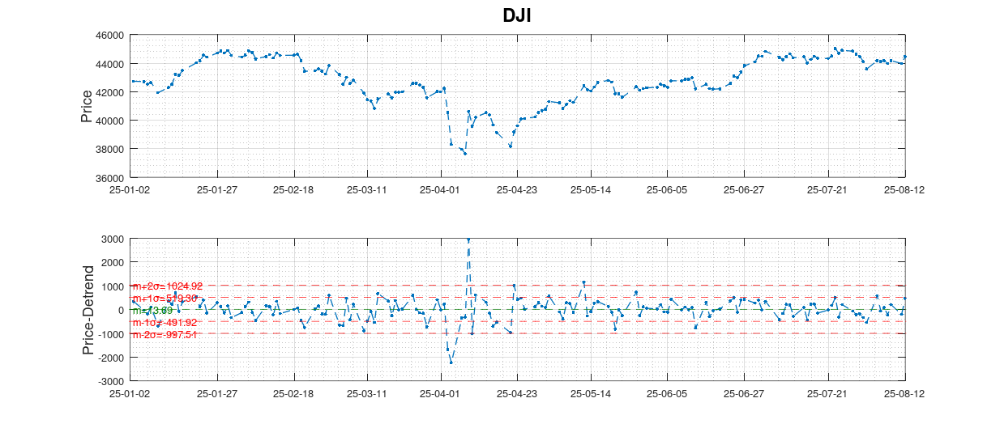
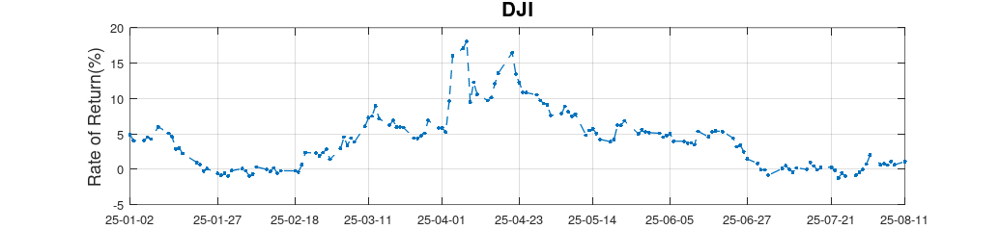
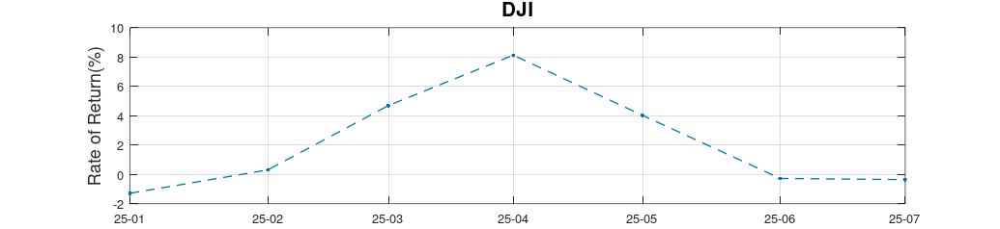

In the book Antifragile (p.127), N. Taleb writes:
The best solution is to only look at very large changes in data or conditions, never at small ones.
The closing points of the Dow Jones Industrial Average (DJI) is shown in the upper plot. The lower plot shows the same data with the trend removed. The dotted green line shows the mean and the dotted red lines show the first and second standard deviations from the mean. The Large Change events occurred at: (25-04-03, 25-04-08, 25-04-09) with changes of (-2231, +2962, -3976), respectively.
The Rate of Return (ROR) for the Dow Jones Industrial Average (DJI) is calculated vis-a-vis the closing points on the final day of the data set, 25-08-12. Specifically, the first ROR value of 4.88% is the ROR from the first day in the data set (25-01-02) to the final day in the data set (2025-08-12).
The first, maximum and minimum RORs occurred at (25-01-02, 25-04-08, 25-07-23) with values (4.88%,18.10%,-1.22%), respectively. Therefore, an investment starting on 25-04-08 would have netted a return of 18.10%.
The first, maximum and minimum RORs occurred at (25-01, 25-04, 25-01) with values (-1.28%,8.13%,-1.28%), respectively. The maximum ROR for monthly oberservations, 8.13%, is approximately 10% lower than the 18.10% above.
Respond to Large Change events, do not overreact to Noise.